長期トレンド
JKMとJEPXシステムプライスの推移グラフ
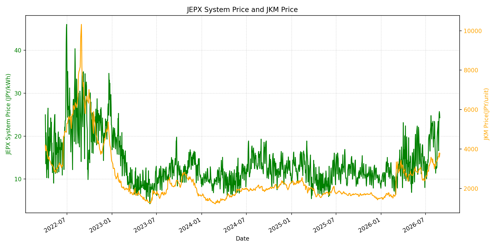
WTIの推移グラフ
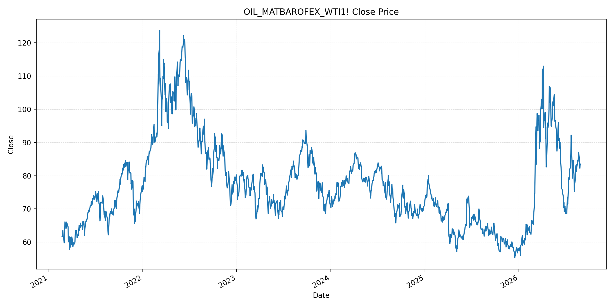
JEPXエリアプライスグラフ（直近一年分）
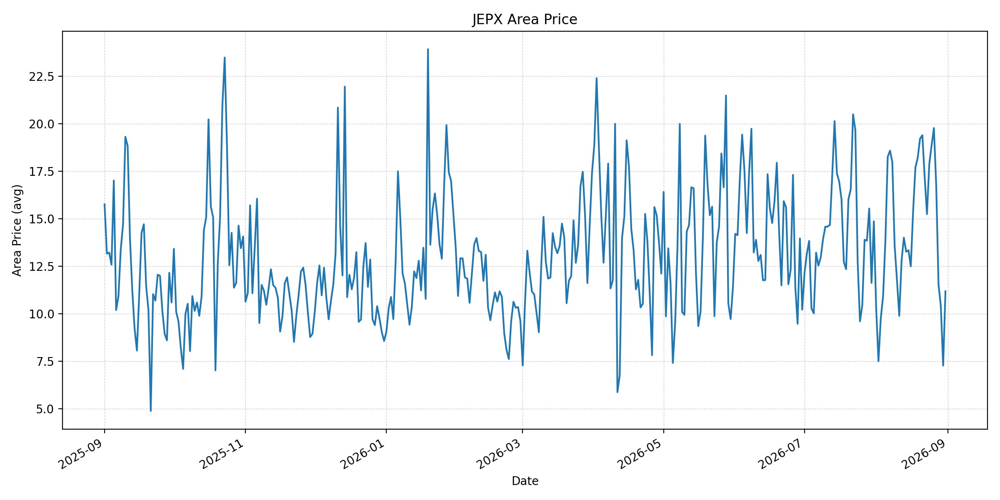
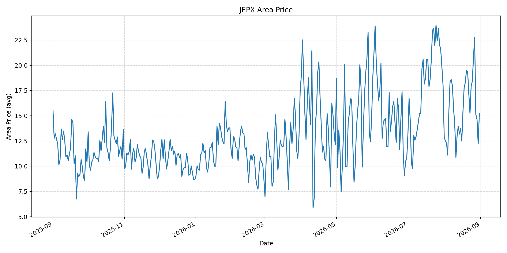
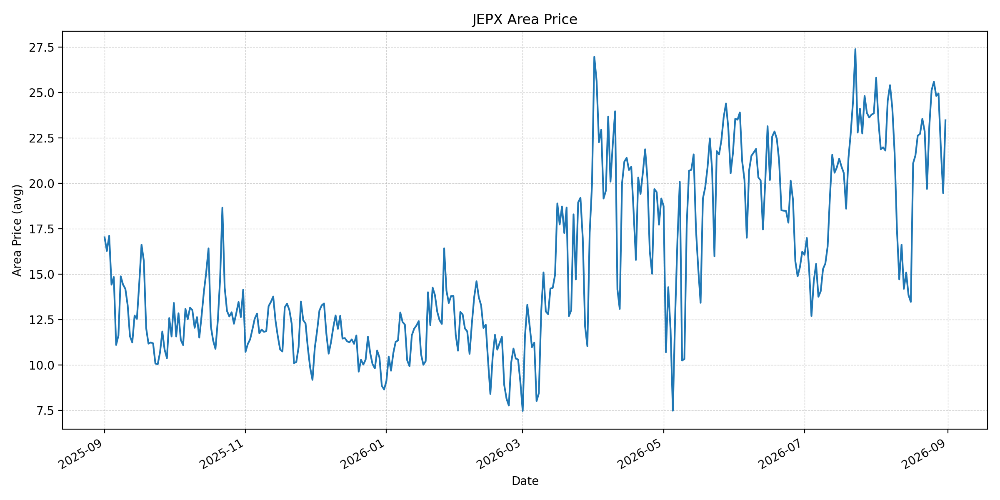
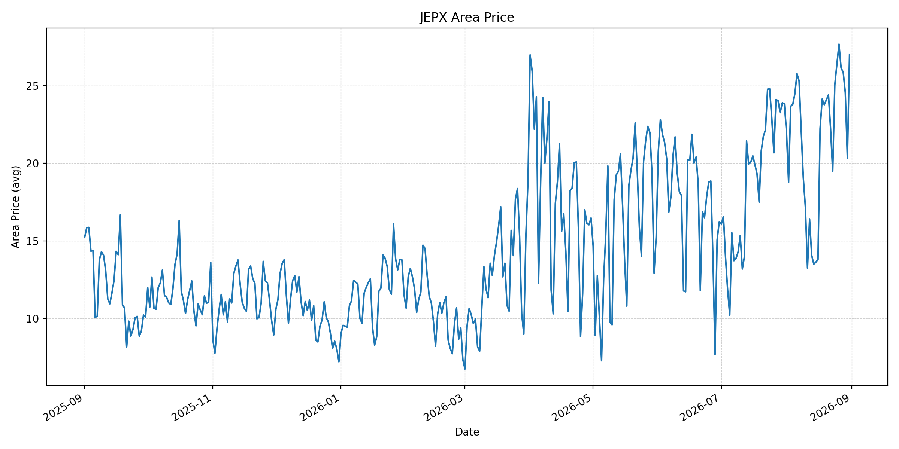
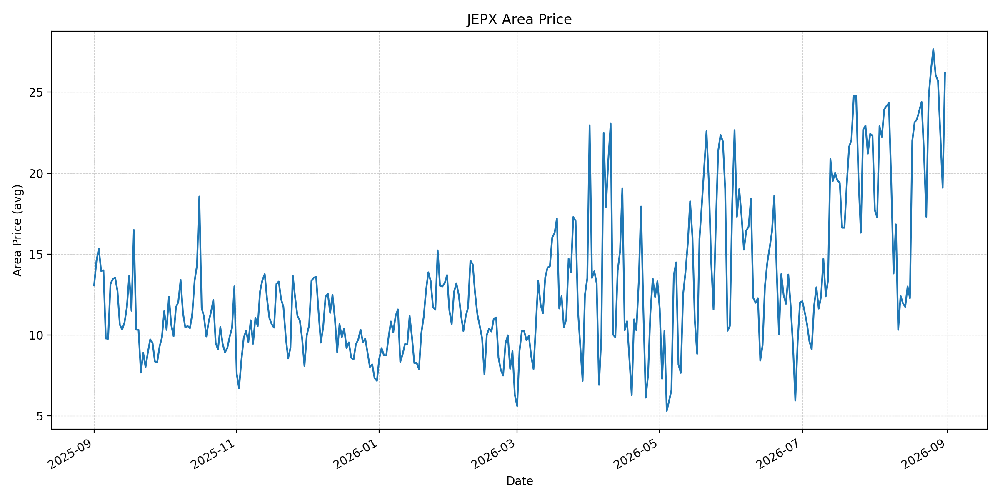
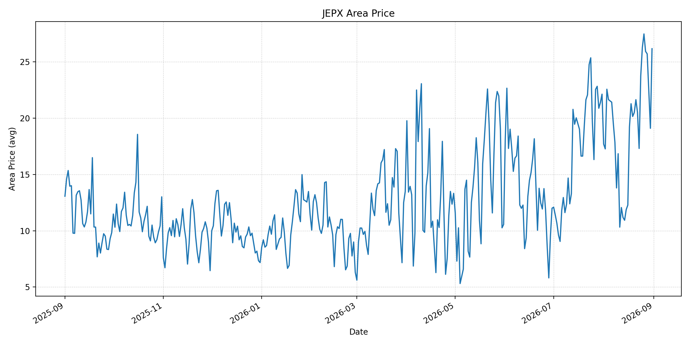
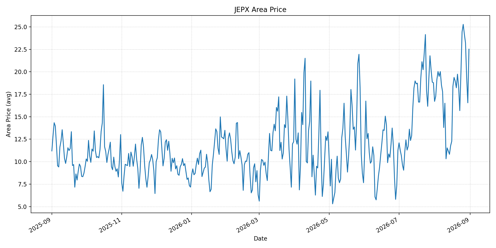
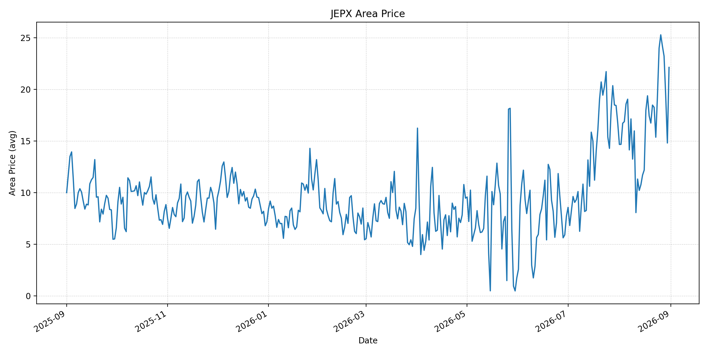
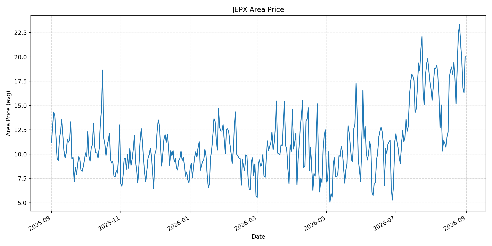
短期トレンド
JKMとJEPXシステムプライスの推移グラフ
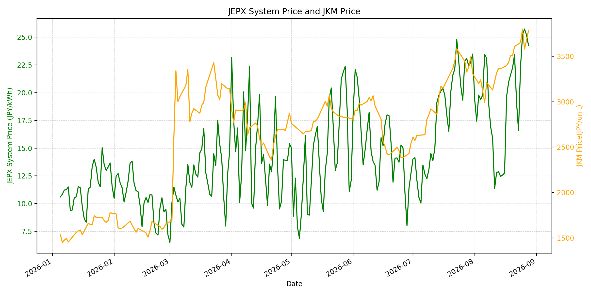
WTIの推移グラフ
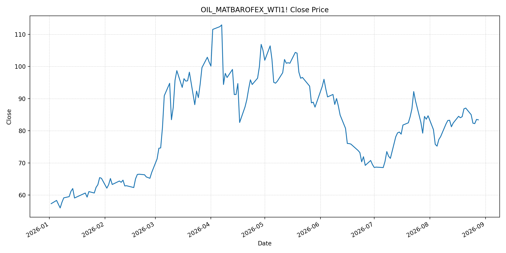
JEPXシステムプライス
最新値は 2026-08-31 分、先週終値は 2026-08-24、先月終値は 2026-07-31 時点の直近値です。
| エリア | 当日価格 | 前日価格 | 前日比（％） | 先週終値 | 先週比（％） | 先月終値 | 先月比（％） | 過去最高値 | 最高値比（％） |
|---|---|---|---|---|---|---|---|---|---|
| システム | 22.10 | 16.67 | 32.57 | 22.31 | -0.94 | 23.48 | -5.88 | 64.06 | -65.50 |
| 北海道 | 11.18 | 7.27 | 53.78 | 17.87 | -37.44 | 14.86 | -24.76 | 73.92 | -84.87 |
| 東北 | 15.25 | 12.24 | 24.59 | 17.91 | -14.85 | 18.04 | -15.47 | 84.92 | -82.04 |
| 東京 | 23.47 | 19.46 | 20.61 | 23.11 | 1.56 | 23.85 | -1.59 | 86.13 | -72.75 |
| 中部 | 27.01 | 20.30 | 33.05 | 25.04 | 7.87 | 23.83 | 13.34 | 52.06 | -48.12 |
| 北陸 | 26.18 | 19.10 | 37.07 | 24.67 | 6.12 | 22.32 | 17.29 | 46.48 | -43.68 |
| 関西 | 26.17 | 19.10 | 37.02 | 23.75 | 10.19 | 22.13 | 18.26 | 46.48 | -43.70 |
| 中国 | 22.51 | 16.55 | 36.01 | 19.87 | 13.29 | 18.78 | 19.86 | 46.48 | -51.58 |
| 四国 | 22.12 | 14.80 | 49.46 | 19.33 | 14.43 | 16.74 | 32.14 | 46.48 | -52.41 |
| 九州 | 20.06 | 16.32 | 22.92 | 18.82 | 6.59 | 17.46 | 14.89 | 40.54 | -50.52 |
LNG先物価格
最新値は 2026-08-28 の LNG(close) です。先週終値は 2026-08-21、先月終値は 2026-07-31 時点の直近値です。
| 当日価格 | 前日価格 | 前日比（％） | 先週終値 | 先週比（％） | 先月終値 | 先月比（％） | 過去最高値 | 最高値比（％） |
|---|---|---|---|---|---|---|---|---|
| 3782.00 | 3674.00 | 2.94 | 3607.00 | 4.85 | 3307.00 | 14.36 | 10319.00 | -63.35 |
石油先物価格
最新値は 2026-08-28 の OIL(close) です。先週終値は 2026-08-21、先月終値は 2026-07-31 時点の直近値です。
| 当日価格 | 前日価格 | 前日比（％） | 先週終値 | 先週比（％） | 先月終値 | 先月比（％） | 過去最高値 | 最高値比（％） |
|---|---|---|---|---|---|---|---|---|
| 83.40 | 83.53 | -0.16 | 87.06 | -4.20 | 84.67 | -1.50 | 123.70 | -32.58 |
ニュース
イラン情勢に関するニュース
- 8月30日、米軍はホルムズ海峡でイランのロケット発射装置を攻撃しました。海峡を巡る軍事的緊張と、通航再開を巡る政治的不確実性が続いています。参照: AP, 2026-08-30
- イラン側は海峡の扱いを交渉条件と位置付けており、対話の進展が実際の輸送回復の前提となっています。参照: AP, 2026-08-30
ホルムズ海峡経由の石油・LNGに関するニュース
- Reutersが8月31日に報じたKplerデータでは、商品船の通航は土曜5隻、日曜0隻で、前週末の31隻を大きく下回りました。タンカー攻撃後、通航はほぼ停止した状態です。参照: Reuters, 2026-08-31
- 海峡は戦前に世界の原油・LNG輸送のおよそ5分の1を扱っており、船舶の安全確保と通航量の回復が燃料供給の主要な確認点です。参照: Reuters, 2026-08-31
ホルムズ海峡経由でない石油・LNGに関するニュース
- 過去24時間で、ホルムズ海峡を経由しないLNG供給量を直接変更する主要な新規公表は確認できませんでした。
- 日本は中東パイプラインの活用支援と調達先多様化を含む供給強靭化策を進める方針です。参照: Reuters, 2026-08-26
日本国内のイラン戦争に関係するニュース
- 過去24時間で、JEPX制度または国内電力需給ルールを直接変更する主要な新規公表は確認できませんでした。
- ホルムズ回避ルートの支援と調達多様化は、中長期の輸入燃料途絶リスクを抑える政策対応として注目されます。参照: Reuters, 2026-08-26
インサイト
ニュース事項による日本の電力市場への影響（短期：数日〜1週間）
- JEPXシステムは 22.10 円/kWhで前日比 32.57%、先週比 -0.94% です。中部 27.01 円/kWh、北陸 26.18 円/kWh、関西 26.17 円/kWhは先週を上回っています。
- LNGは 3782.00 で前日比 2.94%、先週比 4.85%、WTIは 83.40 ドルで先週比 -4.20% です。海峡通航の実績が極めて低い状態では、LNGの上振れリスクが国内火力の限界費用へ波及し得ます。
- 数日から1週間では、通航船舶数、追加の安全事案、米・イラン協議の進展を日次で確認する必要があります。JEPXは燃料要因に加え、エリア別の需給・連系制約で変動します。
ニュース事項による日本の電力市場への影響（長期：1ヶ月〜半年）
- システム価格は先月比 -5.88% ですが、LNGは先月比 14.36% です。高いLNG調達コストが継続すれば、火力依存度が高い局面で卸電力価格を押し上げる可能性があります。
- エリアでは四国が先月比 32.14%、中国 19.86%、関西 18.26% と上昇しています。燃料市況だけでなく、各エリアの需給と連系線利用状況を合わせて見る必要があります。
- ホルムズ回避インフラと調達多様化が実装されれば供給途絶への耐性は高まりますが、実際の物流能力と契約調達量は別途検証が必要です。システム価格、LNG、WTIはいずれも過去最高値を下回っており、短期的なリスクプレミアムと長期的な供給制約を分けて評価します。